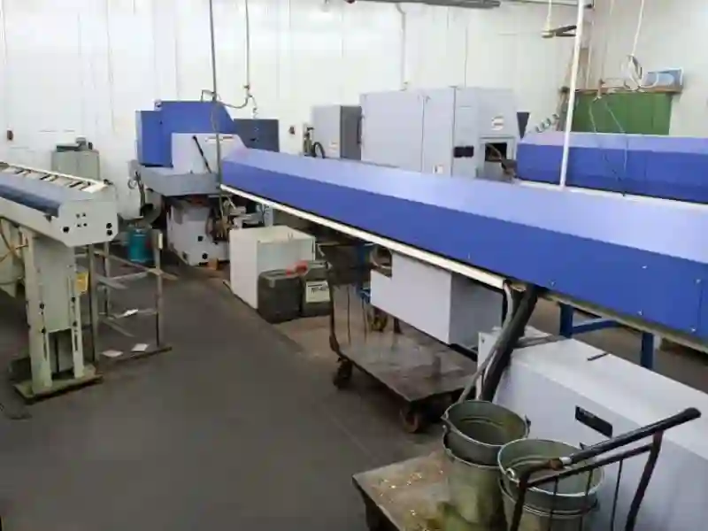
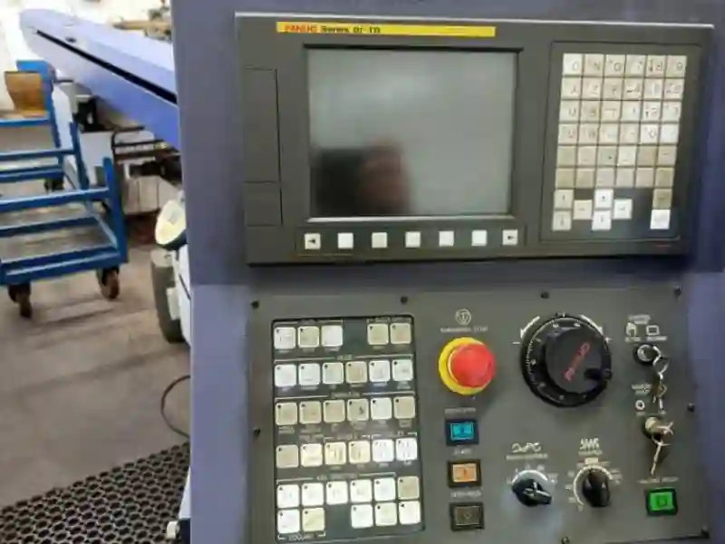
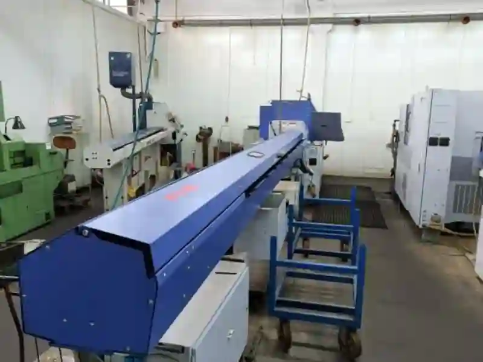

SB-20R Tip G Otomatik TornaMakine Parkımızın Hassas Seri Üretim Gücü
Hassas üretim süreçlerinde yüksek verimlilik, düşük tolerans ve tekrarlanabilir sonuçlar elde etmek için kullanılan CNC otomatik tornalar, modern imalat sanayisinin temel unsurlarından biri hâline gelmiştir. Aymaksan Makine Parkımızda yer alan SB-20R Tip G otomatik torna, özellikle küçük çaplı parçaların yüksek hassasiyetle işlenmesine yönelik geliştirilmiş son derece özel bir üretim platformudur. İsviçre tipi kayar otomat mimarisi sayesinde 20 mm çapa kadar olan bar malzemelerde kusursuz bir hassasiyet sağlayarak otomotiv, medikal, elektronik ve makine sektörlerinin gerektirdiği en zorlu üretim ihtiyaçlarına yanıt verir.
SB-20R Tip G’nin en büyük avantajı, kompakt gövdesine rağmen geniş takım istasyonu, çok eksenli yapı ve aynı anda birden fazla operasyonu gerçekleştirebilme kapasitesidir. Bu sayede hem karmaşık geometrilere sahip hassas parçalar işlenebilir hem de yüksek adetli seri üretim süreçlerinde maliyet avantajı sağlanır. CNC kontrol sistemi, dinamik rijitlik ve stabil mil yapısı ile bu tezgâh, hem prototip üretim aşamalarında hem de yüksek hacimli siparişlerde güvenilir performans sunar.
Bu makalenin devamında SB-20R Tip G Otomatik Torna’nın teknik detaylarını, kullanım alanlarını, işlenebilecek parça örneklerini, avantajlarını ve makine parkımızdaki stratejik rolünü tüm yönleriyle inceleyeceğiz. Ayrıca üretici firmanın Star Türkiye CNC Makina San. Tic. Ltd. Şti. Star Torna Star Kayar Otomat Star CNC SB-20R TİP G linkinden de kısa bilgisini alabilirsiniz.




Projeni Başlat
SB-20R Tip G Otomatik Torna Nedir? Genel Üretim Yapısı ve Çalışma Prensibi
SB-20R Tip G Otomatik Torna, İsviçre tipi kayar otomat sınıfında yer alan ve yüksek hassasiyet gerektiren küçük çaplı parçaların üretiminde kullanılan gelişmiş bir CNC torna tezgâhıdır. Bu makine, özellikle 20 mm çapa kadar olan bar malzemelerde en düşük tolerans ile işleme yapabilmesiyle bilinir. Klasik CNC tornalara göre daha farklı bir mimariye sahiptir; çünkü işleme sırasında parça sabit durmaz, takım malzeme yerine kızak üzerinde ön–arka hareket eden ana mil sayesinde işleme gerçekleşir.
Bu yapı, özellikle ince cidarlı, hassas, uzun ve küçük çaplı parçaların işlenmesinde önemli avantaj sağlar. Kaya gibi rijit yapısı ve kararlı eksen kontrolü sayesinde üretim hattımızda mükemmel tekrarlanabilirlik ile çalışır. Bu nedenle otomotiv bağlantı elemanlarından medikal implant parçalarına kadar birçok kritik bileşen bu tezgâhta başarıyla üretilir.
SB-20R Tip G Otomatik Torna’da aynı anda birden fazla operasyonun yapılabilmesi, üretim döngüsünü kısaltarak yüksek adetli üretimlerde önemli maliyet avantajı sunar. Ek olarak CNC kontrol sisteminin zengin fonksiyonları, çapraz işleme, delik delme, kanal açma, form verme ve diş çekme gibi karmaşık operasyonların tek bağlamada tamamlanmasını sağlar.
SB-20R Tip G Teknik Özellikleri ve Kapasite Yapısı
SB-20R Tip G, kompakt bir gövdeye sahip olmasına rağmen çok geniş bir operasyon kapasitesi sunar. Her detayı, hızlı üretim döngülerini mümkün kılacak şekilde optimize edilmiştir. Bu bölümde makinenin gerçek üretim gücünü oluşturan temel teknik yapı taşlarını ele alıyoruz.
Ana Mil ve Alt Mil Performansı
Ana mil, CNC üretim süreçlerinde parçanın işlenmesinde belirleyici rol oynar. SB-20R Tip G Otomatik Torna’nın ana mili yüksek hız, düşük titreşim ve yüksek güç aktarımı sayesinde seri üretim için ideal bir yapı sunar.
Ana Mil Özellikleri:
- 3.7 kW güç çıkışı
- 10.000 rpm maksimum hız
- 20 mm standart işleme kapasitesi
- Opsiyonel 23 mm işlemeye uygun versiyon
- Rejeneratif frenleme ve hassas hız kontrolü
Bu mil yapısı yüksek yüzey kalitesi, düşük pürüzlülük ve minimum deformasyon sağlar. Özellikle küçük çaplı ve hassas toleranslı parçalar için vazgeçilmezdir.
Alt Mil (Sub-Spindle) Özellikleri:
- 1.1 kW güç çıkışı
- 9.000 rpm hız
- Aynı bağlamada ikinci operasyon işleme
- Arka kesim ve bitirme operasyonları için ideal
Alt mil, parçanın işlenmesi bittikten sonra ikinci bir bağlamaya ihtiyaç duyulmadan tamamlanmasını sağlar. Bu da hem zaman kazandırır hem de ölçüsel tekrarlanabilirliği artırır.
Takım İstasyonu ve Çok Eksenli Yapı
SB-20R Tip G Otomatik Torna, kompakt gövdesine rağmen oldukça zengin bir takım istasyonuna sahiptir:
- 6 adet 12 mm kare tornalama takımı
- İsteğe bağlı 7 adet 10 mm takım kapasitesi
- Çapraz delme ve frezeleme için tahrikli takım modülleri
- Çok eksenli kontrol için 7 eksen CNC yapısı
- Farklı operasyonların eş zamanlı yürütülebilmesi
Bu yapı, çapraz işlemeye olanak tanıdığı için karmaşık parçalar tek bağlamada üretilebilir hâle gelir. Böylece iş akışı hızlanırken, hata payı dramatik şekilde azalır.
Hassas Parça İşleme Kapasitesi
SB-20R Tip G Otomatik Torna’nın İsviçre tipi kayar otomat yapısı, özellikle hassasiyet gerektiren sektörlerde benzersiz avantajlar sunar. Bu makine ile:
- ±0.005 mm tolerans seviyelerinde işleme
- İnce cidarlı boru ve mil üretimi
- Küçük çaplı bağlantı elemanları
- Formlu yüzey işlemeleri
- Karmaşık geometriler
- Çok adımlı diş açma operasyonları
başarıyla gerçekleştirilebilir.
Makine üzerinde bulunan kızak yapısı ve rijit konstrüksiyon, özellikle uzun parçalarda titreşimi minimuma indirir. Bu da mükemmel yüzey kalitesi ve yüksek ölçü kararlılığı sağlar. SB-20R Tip G Otomatik Torna’nın hassas üretim kabiliyeti sayesinde hassas cnc torna üretimi süreçlerinde yüksek verimlilik ve düşük maliyet bir arada sağlanır.
Projeni Başlat
SB-20R Tip G Otomatik Torna ile İşlenebilen Parçalar ve Sektörel Kullanım Alanları
SB-20R Tip G otomatik torna, küçük çaplı ve yüksek hassasiyet gerektiren parça üretiminde sektörlerin en kritik ihtiyaçlarına yanıt verebilecek kapasitededir. Bar besleme altyapısı sayesinde kesintisiz üretim yapılabilir ve bu da özellikle seri imalat süreçlerinde önemli bir avantaj oluşturur.
Bu makine, karmaşık geometriye sahip parçaları tek bağlamada işleyebilmesiyle; hem süreyi kısaltır hem de hata riskini minimuma indirir. Bu nedenle üretim hatlarımızda en çok talep gören tezgâhlardan biridir.
Aşağıdaki sektörlerde SB-20R Tip G aktif olarak kullanılan bir üretim çözümüdür:
Otomotiv Endüstrisi İçin CNC Seri Üretim
Otomotiv sektörü, küçük çaplı bağlantı elemanlarından motor içi bileşenlere kadar çok geniş bir yelpazede hassas parça ihtiyacı duyar. Bu parçaların büyük çoğunluğu yüksek yüzey kalitesi, dar tolerans ve seri üretim uygunluğu gerektirir. SB-20R Tip G Otomatik Torna, bu gereksinimlerin tamamını eksiksiz karşılayabilmektedir.
Bu makinede otomotiv için üretilebilen parçalara örnekler:
- Pimler
- Mil ve aks parçaları
- Enjektör bileşenleri
- Valf gövdeleri
- Sensör yuvaları
- Vites mekanizması bileşenleri
- Toleransı düşük hassas bağlantı elemanları
Ana mil ve alt milin eş zamanlı operasyon yeteneği, özellikle adetli otomotiv üretimlerinde tezgâhı son derece güçlü bir alternatif hâline getirir.
Medikal ve Dental Parça Üretimi
Medikal üretim sektöründe kullanılan parçaların büyük bölümü küçük çaplı, yüksek hassasiyetli ve yüzey kalitesi açısından kritik yapıdadır. Özellikle paslanmaz çelik ve titanyum gibi işlenmesi zor malzemeler SB-20R Tip G Otomatik Torna’nın güçlü taraflarından biridir.
Bu makinede üretilebilen medikal parçalar:
- Ortopedik implante vida ve çiviler
- Dental aparat bileşenleri
- Mikro bağlantı parçaları
- Cerrahi aletlerin minyatür bağlantı elemanları
- Titanyum hassas parçalar
İsviçre tipi kayar otomat mimarisi, medikal sektörün gerektirdiği yüksek tolerans gereksinimini destekleyen en stabil üretim altyapılarından biridir.
Elektronik ve Mekatronik Parça Çözümleri
Elektronik sektöründe kullanılan birçok bileşen, küçük çaplı yuvalar, geçmeler, boru yapı elemanları ve hassas kanallar barındırır. Bu tür parçaların kusursuz bir geometri ile işlenmesi için yüksek hız ve düşük titreşim gereklidir.
SB-20R Tip G Otomatik Torna ile üretilebilen elektronik parçalar:
- Konektör parçaları
- Sensör muhafazaları
- Mikro vida ve bağlantı sistemleri
- Bobin ve soket yuvaları
- Pres-fit metal bileşenler
- Mekatronik ara parçalar
Bu tezgâhın çok eksenli yapısı sayesinde çapraz delikler, açılı kanallar ve özel form yüzeyleri tek bağlamada tamamlanabilir.
Genel Makine ve Bağlantı Elemanları Üretimi
Türkiye’de talaşlı imalat ve özel talaşlı imalat sektörünün büyük bir bölümünü oluşturan bağlantı elemanları, makine parçaları ve çeşitli ara bileşenler SB-20R Tip G Otomatik Torna’nın yoğun olarak kullanıldığı alanlardır.
Üretimi mümkün olan örnek parçalar:
- Bağlantı pimleri
- Stoper milleri
- Vidalı parça altlıkları
- Boru tip ince cidarlı elemanlar
- Ayar vidaları
- Özel tasarım metal bileşenler
Özellikle seri üretim taleplerinde, SB-20R Tip G’nin düşük çevrim zamanı ve otomat yapısı üretim maliyetlerini anlamlı ölçüde iyileştirir.
SB-20R Tip G Otomatik Torna ile İşlenebilen Parçalar ve Sektörel Kullanım Alanları
SB-20R Tip G; TOS SUI 50 Universal Torna, PUMA 280L CNC Torna ve Dahlih MCV-1450 Dik İşleme Merkezi ile birlikte çok katmanlı bir üretim zinciri oluşturur. Bu kombinasyon, işletmelere hem prototip geliştirme hem de seri üretim süreçlerinde eşsiz bir esneklik sağlar.
Diğer Tezgâhlarımız ile Entegre Üretim (TOS SUI 50 – PUMA 280L – Dahlih 1450)
Aymaksan Makine Parkımız bütünsel bir üretim mimarisine sahiptir:
- TOS SUI 50 Universal Torna: Büyük çap ve uzun boy işleme
- PUMA 280L CNC Torna: Güçlü rijit yapısı ile orta-büyük çap yüksek hassasiyetli parçalar
- Dahlih MCV-1450 Dik İşleme Merkezi: 3-4 eksen freze operasyonlarında geniş bir üretim kapasitesi
- SB-20R Tip G Otomatik Torna: Küçük çaplı seri üretim ve hassas otomasyon
Bu yapı sayesinde bir parçanın prototipi, ara işleme süreci ve seri üretim versiyonu aynı makine parkı içinde tamamlanabilir.
Üretim zinciri örneği:
- Prototip torna işlemi → TOS SUI 50
- Parametrik hassas işleme → PUMA 280L
- Frezeleme – kanal açma – form verme → Dahlih MCV-1450
- Adetli seri üretime geçiş → SB-20R TİP G
Bu entegrasyon, müşterilere hem kalite hem de süre avantajı sunar.
Prototipten Seri Üretime Uzanan Esnek Üretim Kabiliyeti
Birçok işletme hem düşük adetli özel üretim hem de yüksek adetli seri imalat ihtiyacı duyar. SB-20R Tip G Otomatik Torna bu anlamda işletmelere iki önemli avantaj sağlar:
- Küçük adet prototip süreçlerinde hızlı revizyon ve yüksek hassasiyet
- Büyük adetli siparişlerde düşük çevrim süreleri ile maliyet avantajı
Bu nedenle; otomotiv, savunma, elektronik ve medikal üretim yapan birçok işletme için SB-20R, vazgeçilmez bir üretim platformudur.
Teklif İsteyin
Neden SB-20R Tip G? Avantajlar, Maliyet Optimizasyonu ve Üretim Verimliliği
SB-20R Tip G otomatik torna, yalnızca hassas üretim yapabilen bir tezgâh değildir; aynı zamanda üretim süreçlerini hızlandıran, maliyetleri düşüren ve kaliteyi sürdürülebilir hâle getiren entegre bir üretim çözümüdür. İsviçre tipi kayar otomat yapısı sayesinde, hem ince cidarlı hem de küçük çaplı parçalarda benzersiz hassasiyet sunarken, çok eksenli yapısı karmaşık operasyonları tek çevrimde tamamlamaya olanak tanır.
Aşağıda bu tezgâhın öne çıkan avantajlarını bulabilirsiniz.
Yüksek Hassasiyet ve Tekrarlanabilir Üretim Kapasitesi
SB-20R Tip G’nin en önemli özelliklerinden biri, ölçüsel stabilitesidir. Bu tezgâh:
- ±0.005 mm tolerans seviyesinde işlem yapabilir,
- Aynı parçanın binlerce adet üretiminde aynı hassasiyeti tekrarlar,
- İnce cidarlı ve uzun parçalarda minimum titreşim ile üstün yüzey kalitesi sağlar.
Bu nedenle, özellikle hassas üretim gerektiren medikal ve otomotiv sektörleri için ideal bir tezgâhtır.
Çok Eksenli Operasyon Yeteneği ile Zaman Tasarrufu
7 eksenli yapısı ve tahrikli takım sistemi sayesinde SB-20R Tip G Otomatik Torna, birden fazla operasyonu tek bağlamada gerçekleştirebilir. Bu da aşağıdaki avantajları doğurur:
- Operasyon sayısı azalır
- Bağlama hataları ortadan kalkar
- Üretim süresi %30–40 kısalır
- İşçilik maliyetleri düşer
- Kompleks parçalar tek seferde ortaya çıkar
Kısacası bu tezgâh, hem üretim hızını hem de ürün kalitesini eşzamanlı olarak yükseltir.
Yüksek Adetli Üretim İçin Çevrim Süresi Avantajı
Bar besleme sistemi ile otomatik çalışan SB-20R Tip G Otomatik Torna, uzun süre kesintisiz üretim yapabilir. Bu yapı:
- Seri üretim hatlarında verimliliği en üst düzeye çıkarır
- Vardiya sürelerinde duruş süresini azaltır
- Operatör bağımlılığını minimuma indirir
Bu nedenle otomotiv ve bağlantı elemanları sektöründe yoğun olarak tercih edilir.
Küçük Çaplı Parçalarda Üstün Stabilite
Küçük çaplı parçaların işlenmesi, talaşlı imalatın en hassas süreçlerinden biridir. SB-20R Tip G’nin kayar otomat prensibi sayesinde:
- İnce malzeme esnemez
- Titreşim en aza iner
- Talaş kaldırma dengeli olur
- Yüzey kalitesi maksimum seviyede korunur
Bu özellikler, özellikle elektronik ve mekatronik sektörlerinde üretim yapan firmalar için kritik bir avantajdır.
İşleme Maliyetlerinin Azalması
SB-20R Tip G Otomatik Torna, otomatik yapı ve çok eksenli operasyon kabiliyeti sayesinde maliyetleri ciddi ölçüde azaltır:
- Daha az bağlama → daha kısa süre
- Daha az operatör müdahalesi → daha düşük işçilik
- Daha düşük fire oranı → daha verimli malzeme kullanımı
- Daha stabil üretim → daha yüksek kalite
- Daha kısa çevrimler → birim maliyeti düşürür
Bu nedenle hem prototip hem de adetli üretim süreçlerinde ekonomik bir platform sunar.
SB-20R Tip G Otomatik Torna ile Üretim Yapan Firmaların En Sık Sorduğu Sorular (SSS)
Aşağıda, kullanıcıların en sık merak ettiği sorulara ticari ve teknik açıdan net yanıtlar bulabilirsiniz.
SB-20R Tip G hangi çaplarda üretim yapabilir?
Standart olarak 20 mm çapa kadar işleme yapılabilir. Opsiyonel versiyon ile 23 mm kapasiteye çıkmak mümkündür. Bu değer, İsviçre tipi otomatik tornalar için son derece ideal bir aralıktır.
Hangi malzemeler işlenebilir?
Bu tezgâh aşağıdaki malzemeleri yüksek hassasiyetle işleyebilir:
- 304 / 316 paslanmaz çelik
- Otomat çelikleri
- Alüminyum alaşımları
- Pirinç ve bronz malzemeler
- Titanyum alaşımları
- Bakır türevleri
- Yüksek mukavemetli çelik alaşımları
Isı işlem görmüş veya zor işlenen malzemelerde dahi seri üretim kabiliyetini korur.
Karmaşık geometrili parçalar yapılabilir mi?
Evet. 7 eksen + tahrikli takımlar sayesinde çapraz delme, eğik kesme, kanal açma, form verme ve diş çekme operasyonları tek bağlamada yapılabilir. Bu, SB-20R Tip G Otomatik Torna’nın en güçlü yönlerinden biridir.
Makinenin kullanım alanı hangi sektörleri kapsıyor?
Başlıca sektörler:
- Otomotiv
- Medikal
- Elektronik
- Mekatronik
- Savunma sanayi
- Endüstriyel makine üretimi
- Bağlantı elemanları ve özel parça üretimi
Bu makine prototip üretimi için uygun mu?
Evet. SB-20R Tip G Otomatik Torna, hem düşük adetli prototip üretiminde hem de yüksek adetli seri üretimde üstün performans sağlar. Tek bağlama prensibi prototiplerde önemli bir zaman tasarrufu oluşturur.
SB-20R TİP G ile yapılan üretim daha mı ekonomiktir?
Çoğu durumda evet. Otomasyon + hızlı çevrim + düşük hata oranı üçlüsü sayesinde birim üretim maliyeti ciddi biçimde düşer.
İletişime Geçin
SB-20R Type G CNC Torna
SB-20R Tip G CNC Otomatik Torna, küçük çaplı metal bileşenlerin seri üretiminde mükemmel tekrarlanabilirlik sunan bir platformdur. Bu tezgâh, özellikle hassas cnc torna üretimi gerektiren projelerde üstün performans sağlar. 20mm bar sürücülü cnc torna yapısı sayesinde yüksek hız, düşük tolerans ve istikrarlı işlem kabiliyeti bir arada sunulur. Üretim süreçlerinde otomotiv cnc seri üretim tezgahı olarak tercih edilmesinin nedeni, hem hız hem de kaliteyi aynı anda sağlayabilmesidir. Star sb-20r cnc üretim kapasitesi ile işletmelere verimli, ekonomik ve uzun vadede sürdürülebilir çözümler sunar.
İsviçre Tipi Otomatik Torna Sistemi
Isviçre tipi otomatik torna sistemi, özellikle küçük çaplı işleme gerektiren sektörlerde en yüksek hassasiyeti sunmasıyla bilinir. Bu mimarinin en güçlü temsilcilerinden biri olan SB-20R Tip G CNC Otomatik Torna, malzemenin ana mil içinde ilerleyerek işlenmesini sağlayan yapısıyla titreşimi minimuma indirir. Bu sayede küçük çap hassas işleme merkezi olarak optimum verimlilik sağlar. CNC kayar otomat üretim çözümleri arayan işletmeler için ideal bir seçenek olup, medikal parça işleme cnc torna operasyonlarında kritik toleransları başarıyla karşılar. Ayrıca SB-20R CNC Makina Teknolojisi, üretim süreçlerine kararlı bir yapı kazandırır.
Hassas Seri İmalat Torna Makinesi
Hassas seri imalat torna makinesi sınıfında yer alan SB-20R Tip G CNC Otomatik Torna, hem prototip hem adetli üretim süreçlerinde mükemmel yüzey kalitesi sunar. CNC seri üretim tezgahı arayışında olan firmalar, bu makinenin düşük çevrim süresi ve kararlı eksen kontrolü sayesinde önemli bir avantaj elde eder. CNC kayar otomat hizmeti ihtiyacı olan sektörler için hem ekonomik hem de yüksek performanslı bir çözümdür. Ayrıca CNC otomatik torna fiyat araştırması yapan işletmeler, bu tezgâhın üretim maliyetlerini uzun vadede düşürdüğünü fark edecektir. Teknolojik altyapısı ile farklı malzemelerde yüksek tekrarlanabilirlik sağlar.
SB-20R Tip G CNC Otomatik Torna, küçük çaplı parça üretiminde sunduğu benzersiz hassasiyetle medikal, otomotiv ve elektronik sektörlerinin beklentilerini karşılar. Özellikle medikal parça işleme cnc torna operasyonlarında ±0.005 mm tolerans seviyelerinde üretim yapılabilir. Bu tezgâh, cnc kayar otomat üretim çözümleri arayan işletmeler için hem hız hem de kalite sunar. Üretim mimarisindeki kararlı takım yapısı sayesinde uzun süreli seri üretimlerde bile stabil performansını korur. Star SB-20R CNC üretim kapasitesi, işletmelere küçük çaplı parçaların yüksek adetli üretiminde rakipsiz verimlilik sağlar.
Modern üretim tesislerinde SB-20R Tip G CNC Otomatik Torna, 20mm bar sürücülü cnc torna kabiliyeti sayesinde geniş bir malzeme yelpazesinde kullanılabilir. Otomotiv cnc seri üretim tezgahı olarak yoğun talep görmesinin nedeni, hem hızlı hem de hatasız operasyonları mümkün kılmasıdır. CNC seri üretim tezgahı sınıfında yer alan bu model, aynı zamanda SB-20R CNC Makina yapısıyla düşük enerji tüketimi ve yüksek dayanıklılık sunar. Hassas cnc torna üretimi gerektiren sektörlerde işletmelere malzeme tasarrufu, zaman avantajı ve maliyet optimizasyonu sağlar.
Üretim süreçlerinde verimliliği artırmak isteyen firmalar için SB-20R Tip G CNC Otomatik Torna, vazgeçilmez bir çözümdür. CNC otomatik torna fiyat araştırması yapan işletmeler, bu makinenin sunduğu operasyonel avantajların toplam sahip olma maliyetini ciddi şekilde düşürdüğünü görür. CNC kayar otomat hizmeti kapsamında özellikle küçük çap hassas işleme merkezi olarak tercih edilen bu platform, medikal parça işleme cnc torna süreçlerinde de yüksek stabilite sağlar. Star SB-20R CNC üretim kapasitesi, hem kısa vadeli hem uzun vadeli üretim projelerinde işletmelere güvenilir sonuçlar sunar.
Sonuç: Aymaksan Hassas Üretim Standartlarında SB-20R Tip G’nin Yeri
Aymaksan Makine Parkımız içinde yer alan SB-20R Tip G otomatik torna, özellikle küçük çaplı parça üretiminde elde edilen yüksek hassasiyet ve tekrarlanabilir kalite ile işletmemizin üretim kabiliyetini önemli ölçüde güçlendirmektedir.
Bu tezgâh; otomotiv, medikal, elektronik, mekatronik ve savunma gibi hassas üretim gerektiren sektörlerde, teknik beklentilerin üzerinde performans sunar. Çok eksenli yapısı, tahrikli takımların sağladığı esneklik ve otomatik bar besleme sistemi sayesinde hem düşük adetli özel işlerde hem de yüksek hacimli seri üretim taleplerinde güvenilir bir üretim platformudur.
SB-20R Tip G Otomatik Torna, yalnızca teknik kapasitesiyle değil, üretim stratejileriyle uyumlu esnek yapısıyla da öne çıkar. TOS SUI 50 Universal Torna, PUMA 280L CNC Torna ve Dahlih MCV-1450 Dik İşleme Merkezi ile birlikte oluşturduğu tam kapsamlı üretim zinciri, işletmelere tek kaynaktan çözüm sunmamızı sağlar.
Bu tezgâhın sunduğu düşük tolerans, yüksek hız, seri üretim performansı ve düşük maliyetli operasyon yapısı, modern talaşlı imalatın gerektirdiği tüm koşulları karşılar. Hem bugün hem de gelecekte, hassasiyet odaklı üretim vizyonumuzun merkezinde SB-20R Tip G yer alacaktır.